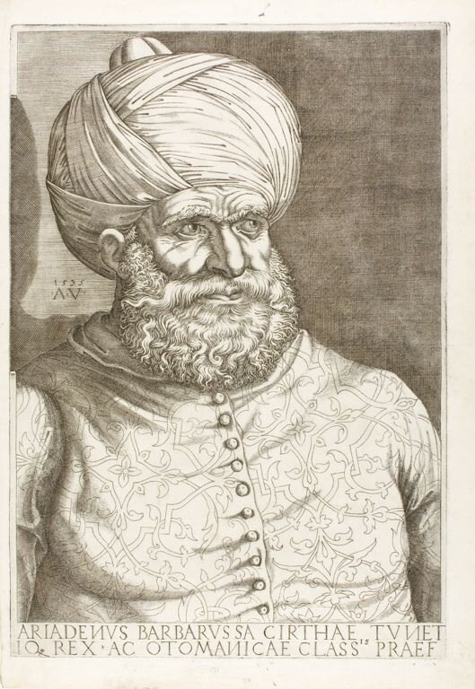
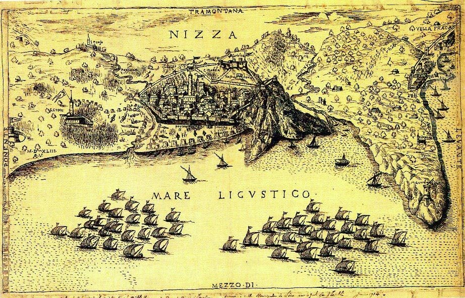
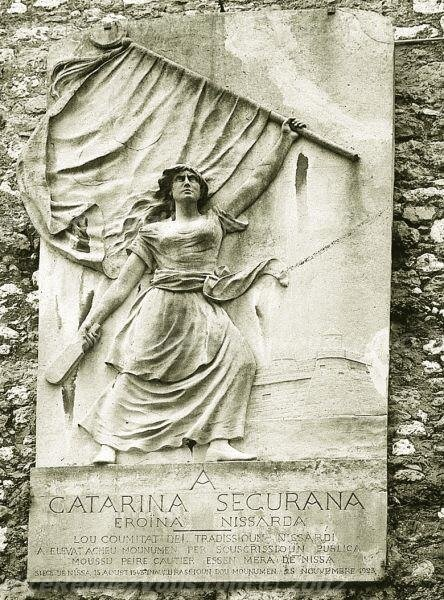
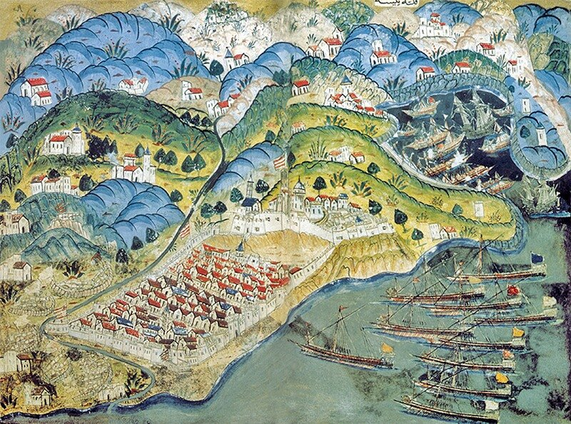

Suscitans de pulvere egenem, et de stercore erigens pauperem ut sedeat cum principibus…
Из праха поднимает бедного, из брения возвышает нищего, чтобы посадить
его с князьями, с князьями народа его…
Ветхий завет. Псалтирь. Псалом 112
До сих пор мы не упоминали никаких морских заслуг Эскалена. Каким образом этот сугубо сухопутный воин стал генералом галер?
Из предыдущих заметок мы знаем, что 16 марта 1541 года король Франции Франциск I издает указ о назначении капитана Антуана Эскалена «nostre procureur général et messager spécial pour traicter et conclure avec très haut, très excellent et très puissant magnanyme et invincible prince le grant empereur des Monsurmans et Soltam Solyman Bach, nostre très amé frère et parfait amy» («нашим полномочным представителем и специальным посланником для ведения переговоров и заключения соглашений с высочайшим и могущественнейшим великодушным и непобедимым правителем, великим императором мусульман (Monsurmans) и султаном Сулейман-Пашой, нашим любимейшим братом и безукоризненным другом».) Брантом более подробно раскрывает суть поставленной перед Эскаленом задачи: «провести переговоры о предоставлении султаном крупного военно-морского соединения для ведения войны на море и в прибрежной зоне против императора Карла V.» Вот когда морская тема впервые появляется в карьере Антуана Эскалена.
В более поздних документах эта цель раскрывается подробнее: требовалось уговорить султана об отправке как минимум 150 галер с артиллерией, чтобы поддержать действия французов против императора не только в Италии, но также в Испании, во Фландрии и в Венгрии. Эта задача была непростой. У султана еще свежо было воспоминание о провале подобных переговоров в 1537 году, когда король Франции нарушил свои обязательства перед Блистательной Портой и заключил сепаратное соглашение с Карлом V в Ницце, что вынудило турок отступить. Кроме того, император,почувствовав возможность франко-турецкого сближения, чинил всяческие препятствия на этом пути. Убийство французского посла Ринкона в 1541 году стало одной из таких устрашающих акций. Так что задача перед молодым дипломатом стояла непростая. Начал он ее решение с посещения Венеции, где провел переговоры, стараясь нейтрализовать руководство Светлейшей, выступающее против франко-турецкого альянса. Кстати, именно в Венеции Эскален впервые познакомился с современным военным флотом того времени.
В декабре 1541 года Эскален прибыл в Стамбул. Переговоры с султаном он вел очень напористо и энергично. Добившись первых результатов капитан Полен в феврале 1542 года поспешил для доклада к Франциску, не останавливаясь ни разу для отдыха на всем протяжении пути от Стамбула до Фонтенбло. Этот путь занял у него двадцать один день. Такая оперативность позволила успешно завершить переговоры о союзнических отношениях
и уже в 1543 году султан направил Франциску военный флот под командованием турецкого адмирала Барбароссы.

Барбаросса (Портрет с гравюры Агостино деи Музи (Агостино Венециано) ,1535).
Миссия, которая досталась Эскалену, оказалась очень деликатной, учитывая резко отрицательную реакцию ведущих христианских стран Европы на франко-мусульманское сближение, которая подогревалась активной пропагандой со стороны императора, подчеркивающего неестественный характер данного альянса. Эскалену приходилось со своей стороны принимать меры для минимизации негативных последствий имперской пропаганды. Ему предстояло провести турецкий флот сначала к берегам Италии, затем к побережью Прованса. Несмотря на противоречивые данные о дате начала движения флота, можно с большой вероятностью утверждать, что вышел он в середине марта 1543 года, взяв первоначально курс на Перпиньян (Восточные Пиренеи), который Франциск тщетно пытался отвоевать у Карла. Однако после провала осады, турецкий флот был перенацелен на Ниццу. Проходя мимо побережья папского государства Эскален направил послание правителю Рима с заверением в своих самых добрых намерениях, подчеркнув, что флот этот нацелен лишь против врагов французского короля, возглавляется его представителем и не имеет
враждебных целей по отношению к папскому государству: « Soliman a confié ses forces maritimes à Barberousse pour attaquer les ennemis de la France, et non ses amis, et lui a ordonné d’obéir à François Ier comme à lui-même. Aussi le Pape peut être tranquille ; les Turcs
ne feront aucune invasion dans ses états.»
О численном составе флота точных данных нет. Хроникер того времени Jouan Badat из Никозии говорит о 180 галерах. Однако сам Эскален в своих бумагах упоминает только о 110 галерах, на борту которых находилось 27 500 человек (последняя цифра является оценочной и определена исходя из средней численности экипажа и солдат на каждой галере того времени). Но даже если принять минимальные цифры, нет никакого сомнения, что на Эскалена была возложена сложнейшая задача. Проводка галерного флота требует развитой сети береговых баз снабжения вдоль пути следования. Учитывая, что отношение к туркам было вдоль всего побережья Италии враждебным, каждый заход для пополнения запасов и отдыха гребцов выливался в крупную проблему. Не всегда эту проблему удавалось разрешать успешно, иногда галеры уходили из очередного пункта базирования несолоно хлебавши. Перебои со снабжением вызвали волнения среди размещенных на галерах отрядов янычар. Турки несколько раз грозили заковать Эскалена в кандалы на одной из галер или даже бросить за борт, если ему не удастся урегулировать все вопросы с прибрежными государствами. Антуан стал высылать вперед отряды, действующие от имени французского короля, которые обеспечивали благоприятную обстановку для захода флота. Но и после принятия этих мер не все заходы заканчивались благополучно. Иногда местное население
попросту покидало места, намеченные для базирования и пополнения запасов флота.

Осада Ниццы объединенным франко-турецким флотом в 1543 году. (из муниципального архива Ниццы)

Баготти, Памятник Катрин Сегуран (1923, Ницца)

Османское изображение осады Ниццы (Matrakçı Nasuh, XVI век)